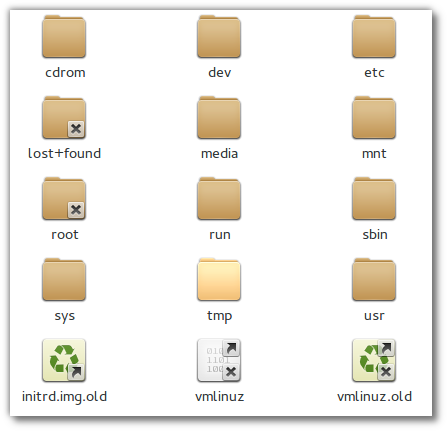

Einleitung
Eine der Hauptaufgaben eines Betriebssystems ist es, Daten als
Dateien auf Datenträgern zu speichern.
Um auf der Konsole mit Dateien und Verzeichnissen arbeiten zu können,
müssen Sie zunächst verstehen, wie der Verzeichnisbaum und das
Dateisystem unter Linux aufgebaut sind.
In dieser Einheit lernen Sie, wie Sie sich in einem Linux-Dateisystem
zurechtzufinden, Dateien und Verzeichnisse erstellen und löschen
können.